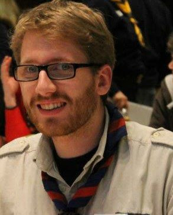
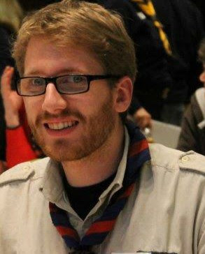

Konsole B:


 

Das Team bestand aus Torben Miller(rechts) und Fabian Biedlingmaer(links). Beide Studieren Angewandte Informatik. In dieser Konstelation wurde bereits im Wintersemester 2016 ein Anfänderpraktikum im Robotiklabor bestritten.
Unser Betreuer bei unserem Fortgeschrittenenpraktikum war Simon Kolhepp.